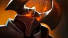
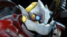
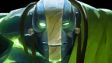
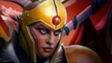

Род Аверно питает купель — разлом в земной тверди, который испускает загадочную энергию на протяжении поколений. Каждого новорожденного семьи окунают в этот темный туман, даруя тем самым связь с их землей и ее загадочной силой. Дети растут с непреклонной верой в защиту семейных ценностей и традиций земли, но на самом деле они охраняют саму купель, истинные намерения которой неизвестны. Когда новорожденный Abaddon проходил обряд крещения, что-то пошло не так. В глазах малыша сверкнула искра разума, испугавшая всех присутствовавших и заставившая жрецов шептаться. Его растили, дабы он пошел по пути всех отпрысков рода: война и защита родины во главе армии. Но сам Abaddon уделял этому не так много внимания. Пока другие тренировались в обращении с оружием, он медитировал у купели. Он глубоко вдыхал темный туман, учась быть единым с той силой, что протекала глубоко под землей его дома. В конечном счете он стал порождением черного тумана. Род Аверно неодобрительно отнесся к такому решению, обвиняя его в пренебрежении обязанностями. Но все эти обвинения прекратились, когда Abaddon вступил в свою первую битву и показал ту обретенную власть над жизнью и смертью, о которой другие члены рода не могли и мечтать.
Abadon

Преданность священной алхимии была традицией рода Темноваров, но никто еще никогда не показывал столько изобретательности, амбиций и безрассудства, сколько проявил юный Раззил. Повзрослев, он оставил семейное дело и решил попробовать себя в производстве золота. Спустя два десятилетия исследований, вложений и подготовок он с треском провалился, попав за решетку за множественные разрушения, причиненные экспериментом. Однако Раззил был не из робкого десятка и тщательно обдумывал варианты побега, чтобы продолжить свои исследования. Когда его новым сокамерником оказался свирепый великан-людоед, алхимик увидел в нем столь желанную возможность для побега. Уговорив гиганта не съедать его, Раззил начал тщательно составлять настойку из плесени и мха, найденных во время исправительных работ. Через неделю она созрела. Когда великан выпил зелье, он впал в ослепительную ярость, разорвал железные прутья, разнес стены и перебил всю стражу. Скоро они затерялись где-то в лесу, окружавшем город. Когда действие тоника отошло, людоед чувствовал себя вполне хорошо и выглядел счастливым и вполне энергичным. Решив работать вместе, с тех пор парочка собирает материалы, необходимые Раззилу, чтобы в очередной раз попытать удачу.
Alchemist

Еще будучи рядовым бугаем в армии Красного тумана, Могул Хан мечтал о звании генерала Красного тумана. Битву за битвой он самыми кровавыми способами доказывал собственное превосходство. Его стремительному взлету по карьерной лестнице не раз способствовало то обстоятельство, что ему ничего не стоило обезглавить своего начальника. Во время семилетней кампании на Тысячеболотье он отличился в кровопролитных бойнях, а звезда его славы засияла еще ярче, в то время как число его соратников неизменно сокращалось. В ночь величайшей победы он провозгласил себя генералом Красного тумана и взял себе высший титул — Axe. Однако в его отряде теперь не значилось ни одного воина. Много бойцов были повержены врагом, но и от лезвия Axe погибло ничуть не меньше. Стоит ли говорить, что большинство солдат ни за что не переманить под его знамена? Но Axe это нисколько не смущает, ведь он знает, что в бою можно положиться только на самого себя.
Axe

Детство Карроха прошло несладко. Мать его умерла при родах. Отца, кузнеца при последнем короле Слома, казнили, растоптав насмерть, когда ребенку было пять лет. Тогда Карроха поселили в королевский зверинец, где он рос среди животных из королевского зверинца: львов, обезьян, оленей-падунов и других, менее известных существ, в которых не всякий верил. На седьмой год жизни парня королевский лазутчик привел во дворец новую тварь. Ее подтащили к королю, закованную в цепи, и та заговорила, хоть и не двигала ртом. Просила она об одном: свободе. Король лишь рассмеялся и приказал зверю выступать ему на потеху, а когда тот отказался, огрел его своим Диким скипетром и приказал отправить тварь в темницу. Следующие месяцы мальчик тайком проносил к существу еду и лекарства, но они лишь слегка отодвигали полное истощение. Без слов зверь говорил с мальчиком, и со временем их связь усилилась настолько, что Каррох понял — он может поддерживать разговор. Более того, он научился общаться со всеми обитателями королевского зверинца. В ночь, когда зверь умер, мальчик впал в ярость. Он повел чудищ войной на прислужников короля, отперев клетки и выпустив зверей на дворцовые земли. В погроме был насмерть закусан, заклеван и зацарапан и сам последний король. Пока царила неразбериха, Каррох освободил одного из королевских оленей, и тот поклонился в ответ, а затем, с Каррохом на спине, перемахнул через высокие стены дворца, унося того из проклятого места. Теперь повелитель зверей Каррох по прозвищу Beastmaster уже взрослый мужчина, но он не потерял способности говорить с дикими зверьми. Сирота из королевского зверинца превратился в неукротимого воина природы.
Beastmaster

Глубоко в Скулящих горах, в долине, что под Разрушенным городом, древний орден Ойо веками практиковал свои ритуалы священного помутнения, соединяясь с миром духов посредством грандиозных хмельных праздников. Рожденный плотской матерью от отца-небожителя, молодой Мангикс стал первым, кто совместил в себе таланты обеих линий. Он занимался с величайшими эстетами Ордена, со временем заполучив с прилежной верностью к напиткам право соревноваться за титул Хмелевара — высшего звания во всей спиртотворческой касте. Девять дней Мангикс сражался и пил до последнего, — оба аспекта были одинаково важны — стараясь одолеть и перепить старшего мастера. Девять ночей они шатались и крутились, спотыкались и наносили удар за ударом — и так до тех пор, пока воин постарше наконец не свалился на землю в пьяном ступоре, и его соперник был наречен новым Хмелеваром. Теперь новый, молодой Хмелевар взывает к силе предков Ойо, дабы те дали ему скорость в обращении с посохом. К своим предкам-небожителям он взывает, когда пользуется магией. И, подобно всем предыдущим Хмелеварам его родины, его послали путешествовать по миру с единственной целью. В бродяжничестве он постигает просвещение сквозь принятие алкоголя, пребывая в постоянных поисках ответа на древнюю духовную загадку; пытаясь надумать ту самую мысль, которая вновь воссоединит духовный и материальный миры.
Brewmaster

Ригварл никогда не уходил от драк и не поворачивался спиной к противнику, даже если тот был крупнее и сильнее его. Окрещенный пьяными толпами как Bristleback, он стал постоянным участником подпольных боев, что проводились в тавернах на тракте между Сломом и Эльзе. Однажды умелого бойца заприметил один трактирщик, искавший вышибалу в бар. За скромную выпивку он стал собирать с посетителей плату, следить за порядком и время от времени ломать конечности особо несговорчивым клиентам (а одному членистоногому бедняге однажды сломал целых пять). Но все же Ригварлу довелось встретить бойца, равного себе. Однажды во время очередной вечерней вахты, уже будучи навеселе от хмеля, он подошел за платой к одному кряжистому детине с севера и заплетающимся языком пробормотал: «Что-то не нравятся мне ваши бивни, уважаемый». Что тут началось! Это было побоище века! В бой бросилось с дюжину посетителей. Не уцелел ни один стул. Хотя Ригварл изрядно приложился к буянам, но и сам в полной мере схлопотал по печени. И все бы ничего, но случилось нечто страшное — клиент ушел, не заплатив за выпивку. За несколько недель раны вышибалы затянулись, а вырванные иглы отросли, но удар по чести был нанесен непростительный. Счет он оплатил из своего кармана, поклявшись выследить северянина и взыскать плату по полной. После этого он занялся тренировками, чего не делал никогда ранее, и неожиданно для себя сделал поразительное открытие. Расправив иглы и усмехнувшись сквозь зубы, он понял — иногда все же стоит показывать противнику спину.
Bristleback

Говорят, что жизненный путь кентавра вымощен телами павших. Если это так, то для кентавра по имени Warrunner этот путь был действительно длинным. Многие чужестранцы, повстречав четырехногих воинов из кланов Друуда, зачастую ошибочно принимают их за простоватых громил. У их языка нет письменной формы, культура бедна на графические символы; в музыке нет четкой структуры, а в религии — строгих правил и догм. У кентавров лучшее проявление своих мыслей и чувств — это битва. Это самовыражение в чистом виде. И если убийство среди кентавров считается искусством, то самый талантливый из их творцов — Брэдводен. Свою несокрушимую мощь он взрастил на землях Омекса, на древней арене, где тысячелетиями кланы кентавров собирались, чтобы провести гладиаторские церемонии. И чем дальше распространялась слава о нем, тем все больше зрителей со всего света прибывали, чтобы увидеть великого кентавра в действии. Всегда выходя на арену первым и уходя последним, он создавал шедевры каждым брызгом крови, каждым взмахом лезвия. Такова его поэзия крови и стали, сложный узор на бледных песках бойни. Warrunner побеждал до тех пор, пока арена не взрывалась выкриками его имени — он стал непобедимым чемпионом. Ему был вручен великий пояс Омекса, но в победе ощущалась лишь пустота. Каков же воин без постоянного вызова? Великий кентавр ускакал из Омекса в тот же день с новой целью. Для своего народа Warrunner — это величайший воин, который ступал на арену. Теперь Warrunner стремится доказать, что он — лучший воин, когда-либо живший.
Centaur Warrunner
Ветеран бесчисленных сражений Chaos Knight появился в далеком мире, где фундаментальные законы вселенной обрели разумное воплощение. Из древних Предвечных он самый старший и неугомонный, и цель его — найти того, кого сам знает лишь под именем Свет. Давным-давно Свет покинул прародительский мир, нарушив этим первое соглашение. И теперь Chaos Knight путешествует из мира в мир в бесконечной охоте на Свет, пытаясь затушить его везде, где он объявится. Тысячу раз задувался источник, и всякий раз он ускользал в другое измерение, из-за чего Chaos Knight начинал поиск заново. Он едет верхом на Армаггедоне, яростно вступает в битвы, получая свою силу из хаоса во вселенной. Он — физическое воплощение самого хаоса. При необходимости он способен призвать иные версии себя из других миров. Вместе темные наездники мчатся в битву, непреодолимые, как стихия. Поиск будет окончен, только когда последний Свет во вселенной погаснет. Где скачет Chaos Knight, вскоре будет смерть.
Chaos Knight

Ратлтрап — выходец из того же смышленого народца, что и Sniper и Tinker, и он также компенсирует свою низкорослость механическими приспособлениями и хитростью ума. Сын часовщика, Ратлтрап много лет учился ремеслу отца — до тех пор, пока война не сошла с гор и не унесла из равнинных поселений мирные профессии. «Теперь твое ремесло — война», — сказал ему умирающий отец, пока деревня их прадедов дымилась, обугленная и сожженная. Плох тот ремесленник, который винит инструменты, и Ратлтрап был не из тех, что придумывал отговорки. Похоронив отца в руинах деревни, он устремился превратить себя в величайший инструмент войны всех миров и времен. Он поклялся, что его больше никогда не застанут врасплох — и соорудил, используя свои знания, механические доспехи, в сравнении с которыми снаряжение иноземцев было подобно консервным банкам. Теперь Ратлтрап живет вместе со своими устройствами — некрупный, но смертоносный воин, разрушение и засада для которого стали способностями, работающими почти автоматически и точно, как часовой механизм. Механик смерти, он быстро кончает жизнь неподготовленных противников с помощью своих творений и несет с собой новый век военной экипировки. Который час? Час Clockwerk!
Clockwerk

Он — тот, кто горит, но не сгорает, пожирает, но не насыщается, убивает, но остается безнаказанным. Он — Люцифер, вершащий судьбы всех тех, кто осмелится встать у него на пути. И несмотря на то, что сейчас он пожинает души адским пламенем своего клинка, Люцифер является падшим ангелом. Даже будучи ранее послушным генералом из вселенной за гранью света, он не пал на колени и был обвинен в страшном грехе — неповиновении. Шесть раз его имя пробили в великий колокол Вашундола. Шестьдесят шесть раз его крылья предавали огню, пока от них не осталось ничего, кроме обугленных лопаток. Без крыльев он сорвался с тросов, что держали его в свете, и с душераздирающим криком пал оземь. Кратер в пустыне, образовавшийся от падения, назвали Потерянным Раем. Теперь Люцифер сражается без пощады и весомого повода. Движимый необъяснимой мотивацией, приправленный невероятными талантами, вершитель судеб всегда несет с собой свой собственный ад, сопровождающий его повсюду. Он — чистая дерзость, и когда-нибудь этот мир будет принадлежать ему.
Doom
Много лет рыцарь Дэйвион выслеживал легендарного древнего дракона, но когда наконец предстал перед своим врагом, страшно разочаровался: ужасающий Слайрак состарился и ослабел, его крылья были потрепаны, плоть прогнила, клыки отупели, а огненное дыхание было не страшнее коробка отсыревших спичек. Не видя чести в его убийстве, молодой рыцарь хотел уйти и позволить старому врагу спокойно умереть. Но в его мысли проник голос: Слайрак прошептал, что рыцарь окажет ему честь, позволив умереть в бою. Рыцарь согласился, и был вознагражден за проявленное милосердие: как только он вонзил свой меч в грудь дракона, тот воткнул свой коготь ему в горло. Когда их кровь смешалась, Слайрак передал ему свою стойкость и мудрость веков. Смерть дракона скрепила их союз. Так и родился Dragon Knight. Древние силы дремлют в рыцаре, просыпаясь, когда он зовет их себе на помощь; или, возможно, это дракон взывает к рыцарю…
Dragon Knight

Среди скал и возвышенностей Скулящих гор есть заброшенный добытчиками руды разрез, из которого добывался священный нефрит. Из этого редкого материала одним умельцем было вырезана статуя великого генерала Каолина, главнокомандующего погибшей десятитысячной армии. Солдаты и священники, шуты и акробаты — все были похоронены под землей долгие тысячелетия с изваянием великого генерала во главе. Но ремесленник-умелец не мог знать, что в разрезе обитает дух земли — природной силы, находившейся в единстве с планетой. Когда нефрит впитал эту силу, копившуюся долгие века, статуя ожила и проложила себе путь на поверхность. Теперь перерожденный Каолин, или Earth Spirit, путешествует по дорогам Скулящих гор, борясь во имя духа земли, при необходимости призывая остатки великой армии, до сих пор находящейся в объятиях земляной толщи.
Earth Spirit

Словно голем или гаргулья, Earthshaker когда-то был един с землей, но сейчас он свободно ступает по ней. В отличие от других, он создал себя своей волей и никому не служит. В беспокойных снах, заключенный глубоко в камне, он узнал, что жизнь проходит над ним. Он вырос любознательным. Во время землетрясений пик горы Ишай стряхивал с себя рыхлые лавины, меняя течение рек и превращая равнины в бездонные разломы. Когда, наконец, земля перестала дрожать, из оседающей пыли, разбрасывая тяжелые валуны как какие-то тряпки, вышел Earthshaker. Он сделал себя похожим на смертную тварь и назвался Рейгором Каменное Копыто. В его венах течет кровь, а в легких проходит воздух, а это значит, что теперь он смертен. Но дух его всё еще связан с землей. Он несет ее силу в магическом тотеме, который всегда с ним. И в день, когда он обратится в пыль, земля примет его как своего блудного сына.
Earthshaker

Вы наверняка задавались вопросом: как этот мир стал таким, какой он есть? Почему среди всех миров именно этот такой странной формы, населен такими разношерстными пестрыми существами со столь богатой культурой и историей? «Ответ, — раздается шепот, — знают Титаны». Они существовали с начала времен, и если даже не созерцали создание сущего, то с рождения помнят его эхо. Клейменные самыми ранними силами вселенной, они не желали ничего иного, кроме как продолжать созидание самостоятельно. Они решили изменять материю по своему разумению: ударяя, нагревая, изгибая и рызрывая ее. И когда материя стала для них слишком простой, они стали изменять сами себя и друг друга. Обостряя ум и перековывая дух, они достигли небывалого могущества. Новой целью стала переделка самой реальности. Но тут они иногда совершали ошибки — большие амбиции давали знать свое. Тот, кого зовут Elder Titan, был большим выдумщиком, постигшим искусство творения. Оттачивая мастерство, он случайно поколебал то, что уже было нельзя восстановить. Он провалился в изломанный мир — осколок собственной души. Там, среди зубчатых разломов, треснутых равнин, и других осколков, провалившихся через трещины раннего мира, он и пребывал. Именно поэтому мир, каким мы его знаем, напоминает горстку выживших в кораблекрушении, про которое все давно забыли. Забыли все, кроме одного, который винит себя. Целую вечность он безустанно ищет способ всё исправить, собрать воедино свою расколотую душу, часть которой может быть в каждом из нас. Именно его мы зовем Elder Titan.
Elder Titan

Порожденный агонией священного мира Нотл, первым, что увидел Huskar, открыв глаза, был одаренный жрец теней Dazzle, накладывающий на него таинственное заклинание. Вопреки древним обрядам ордена Дезун, душа Huskar была спасена от вечности, но, как и все, побывавшие в мире Нотл, он необратимо изменился. Более неподвластная смертной плоти, его собственная кровь обратилась в источник невообразимой силы, каждая пролитая капля с лихвой возвращалась лютой, горящей энергией. Однако этот новообретенный дар привел в ярость Huskar, ведь спасением из Нотла Dazzle лишил его места среди богов. Он был лишен собственного священного жертвоприношения. Со временем старейшины ордена собрались увеличить свое влияние и решили, что Huskar станет устрашающим средством в их кампании. Однако перспектива стать лишь орудием ордена, что отказал ему родовых правах, повергла его в еще большее уныние. Как только на горизонте возникли первые огни восходящей войны, он покинул отчий дом, чтобы найти новых союзников и достойный повод выпустить наружу силу, которую способно дать его абсолютное самопожертвование.
Huskar
Io везде и во всём. Для врагов это великий разрушитель, для ученых мужей — блеск божественного ока. Этот непостижимый сгусток жизненной силы находится одновременно на всех уровнях бытия, а малейшие фракции его сущности воплощаются в физическом мире в каждое отдельно взятое мгновение времени. Подобно великим близнецам-всадникам, Тьме и Свету, Io — древний путник, чье истинное происхождение затеряно в веках, Предвечный вселенной, сила, что старше самого времени, пришелец из миров за пределами понимания смертных. Io — не что иное как совокупность всех сил притяжения и отторжения в материальном поле, разумное проявление заряда, удерживающего сущее вместе. Присутствие Io в материальном мире фиксируется только в контролируемых искривлениях векторов этих сил. Будучи благожелательным по своей природе, Io может связываться с союзниками и передавать по энергетическому каналу свои непостижимые магнетические силы, делая их сильнее и выносливее. Никому не ведомы ни его мотивы, ни истинная мощь. Io — гость в физическом мире, напоминающий, что вселенная полна загадок и тайн.
Io
Адмирала могущественного кладдского флота Kunkka послали защищать острова своей родины, когда демоны Катаракты решили нанести решительный удар по землям людей. Начались годы нерешительных диверсионных вылазок и тщетных масштабных нападений. В конце концов флот демонов направили всю свою эскадру к Дрожащему острову. В отчаянии маги-фаталисты Кладда провели свой последний ритуал — и тысячи древних духов явились, дабы защитить флот. Но даже это с трудом можно было назвать преимуществом в борьбе с флотом демонов. Пока кладдские корабли тонули один за другим, адмирал отдувался на вражеских — топя судна древней магией. Однако в разгаре битвы между людьми, демонами и призраками далекого прошлого что-то, должно быть, пробудило четвертую силу. Вокруг немногих целых кораблей в воздух взмыли гигантские волны цунами, и в сердце боя явился Мэльрон Щупальцеликий. Его склизкие конечности бросали корабли в разные стороны, разбивая кладдские фрегаты о судна Катаракты. Никто не может точно сказать, что же произошло в гуще того столкновения. Катаракта с демоническими воплями затянудась обратно в пустоту, брошенная своими обитателями. Kunkka стал адмиралом, чей флот — единственное судно, которое бесконечно повторяет последние секунды своей жизни. Но пережил ли ту бурю сам Kunkka, или на поле боя выходит лишь его дух? Этого не знает даже Tidehunter — тот, кто и призвал Мэльрона в пучине боя.
Kunkka

Они пришли без предупреждения. Внутри городских стен Стоунхолла вдруг раздался ужасный грохот. Из бывшей когда-то могучей армии Стоунхолла лишь Бронзовый легион под руководством Главнокомандующей Тресдин находился рядом и смог ответить на вызов. Они въехали в город, сражаясь в окровавленных переулках и возле пылающих рынков, прорубая свой путь к источнику внезапного вторжения — пространственному расколу на главной площади, на краю которого бушевал лидер войск тьмы. Охваченный губительным блеском, он взмахивал своим гигантским клинком, рассекая воинов напополам, и плоть его жертв уже начинала разлагаться. Тресдин подняла свой окровавленный меч и взглянула на чудовище. Оно обернулось, обнажив в улыбке массу клыков. Забыв о битве, бушующей вокруг, они бросились навстречу друг другу. Отражая один выпад за другим, пара танцевала в смертельном поединке, пока солдаты Бронзового легиона терпели сокрушительное поражение. Тресдин прыгнула навстречу монстру, а тот занес клинок для решающего удара. Внезапно сильнейший удар сбоку заставил Тресдин покачнуться, но она собрала свои силы для ответного выпада. Клинок ударился о клинок, вошел по рукоять в кривую лапу, разорвав ее надвое, разбрызгивая ужасающую смесь искр и крови. Подлые твари ошеломленно смотрели на битву, а Тресдин лишь усиливала нападение, вонзая меч все глубже, прямо к бьющемуся в панике сердцу чудовища. Раздался жуткий вой, донесшийся до самых облаков, и монстр взорвался потоком крови и страдания. Адский портал заколебался. Сила, питающая его, исчезла также внезапно, как и появилась. Оставшиеся враги пали под напором стали Стоунхолла. Победу не было смысла праздновать: город лежал в руинах, выживших осталось совсем немного. Пожар продолжал полыхать. Развернув свои знамена, Тресдин собрала уцелевших союзников. В гневе она дала клятву отомстить силам бездны, и обречен будет тот, кто встанет на ее пути.
Legion Commander

 DOTAstory
DOTAstory